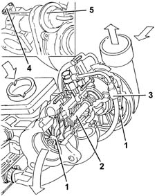

Introduction - ENGINE TURBOCHARGING SYSTEM
- Path
- Descriptions > 10 ENGINE UNIT > 1064 ENGINE TURBOCHARGING SYSTEM > Introduction - ENGINE TURBOCHARGING SYSTEM
- Kind
- system description
- Applies to
- engines: 1.9 JTD 8V; all production periods
- Interactive page
- https://sloeber94.github.io/elrnDB-fMltpl/en/#/2892431
Applies to: engines: 1.9 JTD 8V; all production periods
It basically consists of two impellers (1) fitted on the same shaft (2), which rotates on two floating bearings which are lubricated by means of an branch (3) in the engine lubrication system.
The oil used disperses some of the large amount of heat which is given off by the exhaust gases at the turbine.
There is a wastegate valve (4) fitted on the turbocharger, controlled by a pneumatic actuator (5), which allows the passage of exhaust gases to the turbine to be choked depending on the engine's power/torque requirements.
